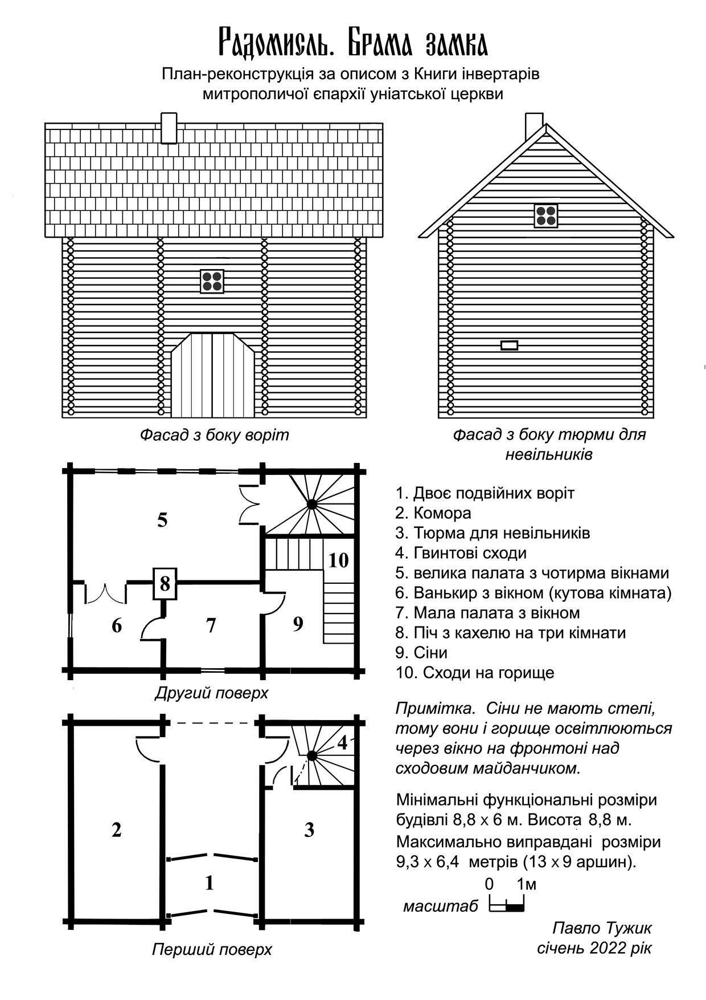
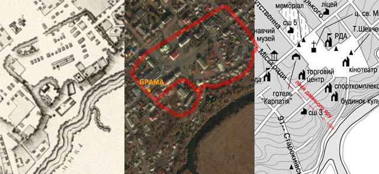

Брама замка Радомисль
План-реконструкція за описом з Книги інвертарів митрополичої уніатської церкви 1774 р.
Перші письмові згадки про містечко під назвою Радомисль1, у гирлі ріки Мики з’являються у XVI столітті, завдяки діяльності архімандритів Києво-Печерського монастиря, які колонізували навколишні землі й оформили їх у церковну власність.2
Зчасом Радомисль стає центром Тетерівської волості. Напевно, щоб отримати такий статус серед інших таких же невеличких поселень в окрузі, місту посприяло його географічне розташування. Зокрема, це ріка Тетерів, яка, як транспортна артерія, пов’язувала Радомисль із Печерським монастирем, а також існував шлях суходолом з Києва через Радомисль на захід.
Очевидно, справи у монастирських пішли досить непогано, й у центрі маєтку накопичувалося достатньо добра, щоб для його зберігання та захисту знадобилися великі комори та міцні стіни. Можливо, така логіка розвитку подій має місце, бо керівництво Києво-Печерського монастиря запросило дозвіл на будівництво замку у Стефана Баторія — короля Польського, Великого князя Литовського та Руського3. Це цілком логічно, бо з 1569 року майже вся територія України, зокрема і Радомисль, була під владою новоутвореної держави Речі Посполитій.
Про документ відповіді короля існує запис:
«10 квітня 1579 рік. Вільно
Дозвіл Мелентію Хребтовичу, архімандриту Печерському, заснувати замок та місто на власній церковній печерській земельній ділянці, розташованій на Київській землі на городище, під яким городищем річка під назвою Мика в річку Тетерів гирлом впадає».4
Як свідчать документи кінця XVII — початку XVIII століття, замок збудували. Звичайно, це був не військовий потужний форт, і не треба уявляти його з десятиметровими кам’яними стінами, височенними вежами до хмар, важкими металевими ґратами на воротах та підіймальним мостом на ланцюгах. Це був типовий господарчий дерев’яний замок, який лише міг захистити людей та добро від різних пройдисвітів, шукачів поживи та невеличких загонів грабіжників. Хоча за історичними згадками не завжди це вдавалося, і замок не один раз був пограбований.
У Книзі інвентарів митрополичої єпархії уніатської церкви за 1774 рік є детальний опис замка, з якого видно повний його занепад — ніщо не владне над часом.
За текстом важко уявити, що включає в себе опис того, як виглядає і де знаходиться. Нижче — фрагмент з опису, що належить до другої брами: перша була звичайними дубовими воротами з дашком зверху.
«Далі по дорозі в замок через міст є друга велика брама на два поверхи з соснового дерева, оббита ґонтом, у котрій двоє подвійних воріт із залізними кунами, що зачиняються на дерев'яний засув. У ній на низу, тобто на першому поверсі, з лівого боку комора, до неї двері на завісах з залізними защіпкою та засувкою, а з правого боку двері на завісах, а при них усередині дверцята соснові, що засуваються дерев'яним засувом — до тюрми для невільників. Напроти вхідних дверей ідуть гвинтові сходи, вийшовши по яких на другий поверх, є велика палата, до неї двері подвійні фасовані липові старі на залізних завісах з французьким замком, нічого не вартим. У цій палаті вікон чотири, шиб круглих скла простого, оправлених у дерево, що вимагають ґрунтовної направи, два вікна з засувами зсередини з соснових дощок. З цієї палати двері до ванькиру на завісах подвійні старі, у ванькирі вікно одне простого скла зіпсоване; у тому ванькирі з лівого боку є двері до малої палати, в якій одне вікно простих шиб, оправлених у дерево, звідти двері до сіней прості з дощок соснових на завісах з клямкою і защіпкою. У великій палаті один стіл, три тапчани, два крісла, а в малій палаті столик і тапчан. Для малої і великої палат, а також для ванькира — одна піч з кахелю у квіти, знизу білого старого. У сінях сходи на горище, в ньому одне вікно, в якому шиби повибивані, там же з палат — мурований комин, що виходить на дах, потребує відновлення».5
Мені вдалося розшифрувати цей текст і відтворити в плані-реконструкції. Відповідність його можна побачити, читаючи опис спочатку й одночасно відшукуючи елементи на малюнку — таким чином, прогулюючись будівлею, можна розглядати її закутки.

Додаток для кращого уявлення та розуміння того, що брама могла виглядати близько до викладеного плану.
Опис вказує, що будівля була дерев’яна (зруб) і крита ґонтом (черепицею, виготовленою з дощок). Спочатку я з’ясував, якими мірами довжини користувались того часу. «Погравшись» з ними, я зрозумів, що для цілі задуму це не суттєво і для зручності залишився в метричній системі. За основу розрахунків прийняв товщину стін з колод 20 см.
Ключем для виявлення пропорцій взяв із запасом ширину і висоту самих воріт, виходячи з того, що через них повинна вільно проїхати підвода, завантажена великою кіпою сіна, запряжена двома волами або кіньми. Логіка з першими воротами показала, що оптимальний варіант — відчиняти їх всередину брами, бо це захищає їх від дощу та снігу, а в протилежному варіанті потрібно над ними спорудити захисний козирок, проте при постійно відчинених воротах він не буде ефективним.
Другі ворота розмістив трохи вглиб брами, щоб перші не накладалися на них і не зменшували ширину проїзду. Його довжина визначається розмірами кімнат на другому поверсі. Двері в комору, які відчиняються всередину, розмістив у кінці проїзду в брамі ліворуч. Праворуч — двері на сходову клітку. Вона повинна мати розмір, який дозволяє розмістити в собі гвинтові сходи, й щоб перед ними ще залишався простір для відчинених вхідних дверей, а також праворуч для дверей до темниці.
Знайшовши таким чином розміри правого крила брами, для симетрії використав їх на лівому. За сходами на другому поверсі велика палата з чотирма вікнами, які дивляться всередину замку. Описані круглі дешеві шиби вікон вказують на те, що вони виготовлені кустарним способом на гуті6. З цього можна визначити їх розмір і зрозуміти, як виглядали вікна.
З лівого боку великої палати, в куті, подвійні двері у ванькир (кутова кімната). Вікно цієї кімнати я розмістив на бічній стіні будівлі, тому що для брами потрібен огляд бічного сектору. Якщо це вікно розмістити з фронту будівлі, тоді, логічно, що у великій палаті потрібно було б одне з чотирьох вікон зробити бічним. Далі за ванькирем — мала палата з вікном на фронтальній стіні та з дверима у сіни.
Зберігаючи умови опису, я розмістив піч із кахлів у місці, щоб опалювати три кімнати (і, що важливо, — її фундамент спирається на стіну першого поверху). У сінях немає стелі (це типово на той час), тому світло з вікна, яке розташоване на фронтоні, освітлює їх і одночасно горище. Без стелі просто вивести сходи на горище літерою «Г». Між їх маршами — сходовий майданчик. Його висота дає можливість для спостережень через вікно. Таким чином, з брами можна оглядати місцевість на чотири сторони.
Щоб виконати вищеописані умови й не ускладнювати конструкцію даху, він повинен бути двоскатним. Маючи загальний план будівлі, можна оптимізувати її розміри. З цього виходить, що мінімальні функціональні розміри — 8,8 × 6 м, а максимальні — не більші за 9,3 × 6,4 м (13 × 9 аршин). Висота брами — до 8,8 м.
Локацію замка та брами можна визначити по валам і ровам, які позначені на плані Радомисля 1800 року.

Зіставивши план Радомишля 1800 р. з сучасним аерознімком міста та з планом, на якому позначені горизонталі рельєфу, без сумнівів можна стверджувати, що рів, який знаходився з південно-західної сторони замка, проходив по вулиці Міськради від будинку Пенсійного фонду до кочегарки школи №3 і далі. Очевидно, що цей рів у давнину був яром, який у верхній частині трохи заглибили. Згідноз встановленою локацією замку на перехресті вул. Великої Житомирської й Міськради через рів був міст, а трохи далі за ним, нині біля «Колізею», магазину «Мак-Дак», була розташована двоповерхова будівля — брама замку.
- З 1946 назва Радомишль.
- З історичних документів відомо, що давніша, попередня назва міста була Мическ, Мицько. В останнє Мицько згадується 1390 роком у дарчій грамоті київського і литовського князя Володимира Ольгердовича серед інших поселень, які були даровані князю зі Сквири Юрію Івановичу Половцю. Чому його нащадки Рожиновські втратили право на селище Мицько і яким чином воно опинилося з радісною мислю у власності Києво-Печерського монастиря під новою назвою Радомисль невідомо. Слід зауважити, що археологічні експедиції 2011-2019 рр довели, що літописний Мичеськ (знайдений та досліджений культурний шар ґрунту Х-ХІІІ ст.) знаходився на лівому березі Тетеріва у гирлі річки Мики в координатах сучасного центру, а мікрорайон Радомишля Микгород був заселений пізніше, у пізньому середньовіччі.
- Титул «Князь Руський» має відношення лише до території України. У середньовіччі вона мала назву Русь. Те державне утворення, яке зараз називають Росією, було так названо Петром І у 1721 році, до нього воно мало назву «Московське Царство».
- 290 стор. Руська (Волинська) метрика. Регести документів Коронної канцелярії для українських земель (Волинське, Київське, Брацлавське, Чернігівське воєводства) 1569 — 1673 рр. До неї записувались офіційні копії вихідних документів польської Коронної канцелярії.
- Оригінал опису замку зберігається в Центральному державному історичному архіві Росії (м. Санкт-Петербург).
- Гута — промисел, маленьке підприємство, де розташовані скловарні печі, відбувається варіння скла та виготовлення скляних виробів. Поширилося гутництво в Україні з XVI ст.